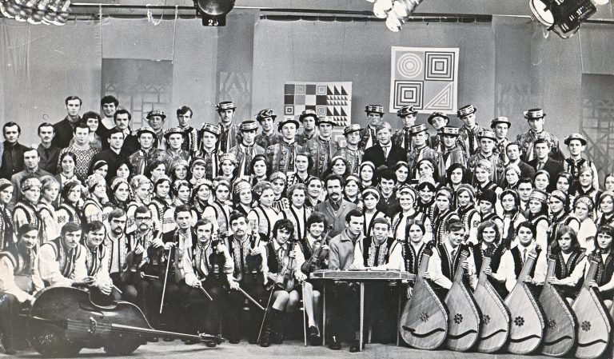
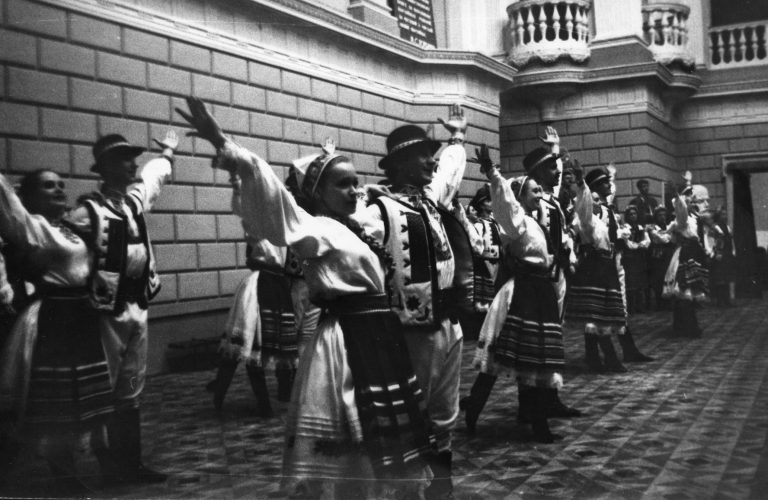
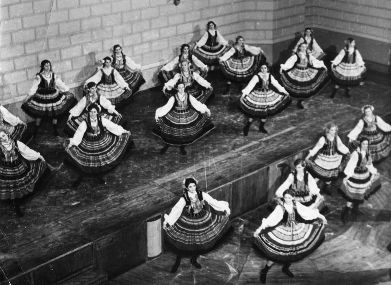
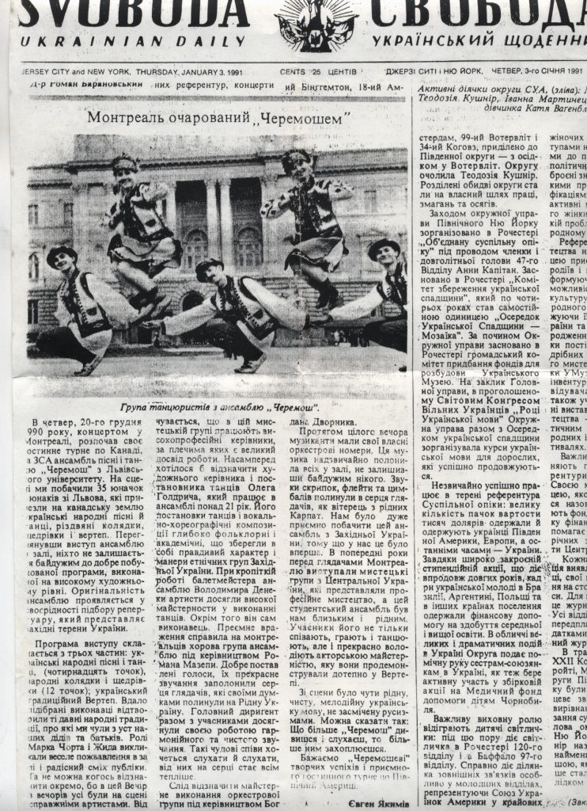
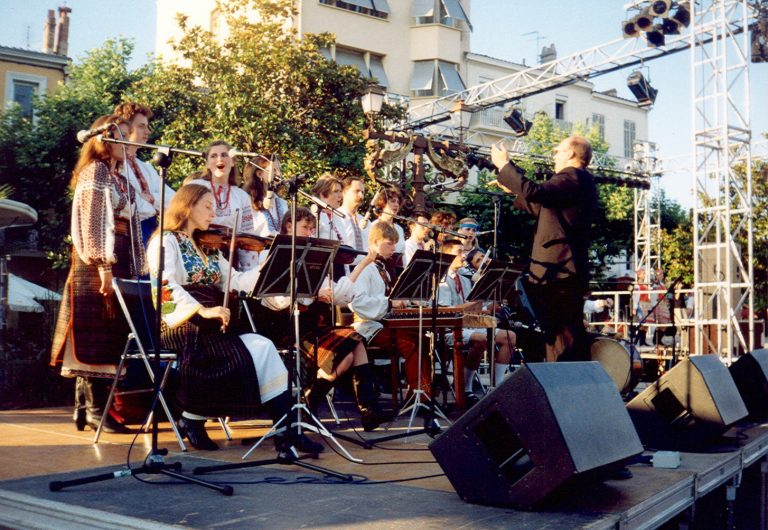

Далекий 1963 рік знаменував створення Народного ансамблю пісні і танцю “Черемош” Львівського національного університету імені Івана Франка. Плеяда креативних, творчих і напрочуд талановитих людей заклали фундамент славному колективу, який і дотепер примножує досягнення своїх попередників і творить нову історію!
А все розпочалось у актовій залі Львівського університету, де фольклорно-етнографічний ансамбль “Веснянка” Київського національного університету імені Тараса Шевченка зачарував присутніх львів’ян своїми мистецькими уміннями. Так зародилась ідея заснування творчого осередку, де б генерувало і популяризувалось українське фольклорне мистецтво. Назву “Черемошу” прорік тодішній голова студентського клубу Роман Баб’юк, а на чолі колективу стали обдаровані митці: диригент Володимир Панасюк, керівник оркестру Тарас Ремешило та хореограф Пилип Сех.
Закохані в українську народну культуру, учасники черемошанського братства активно творили на мистецькій ниві і у 1972 році колектив став лауреатом Всесоюзного конкурсу самодіяльного мистецтва, де здобув золоту медаль. Ансамбль виступав на сценах Дніпропетровська, Харкова, Києва, Донецька, брав участь у святкуванні 25-тиріччя університету ім. Марії Кюрі-Складовської у Любліні. У 1977 “Черемош” нагороджено дипломом 1-го ступеня Всесоюзного фестивалю самодіяльної творчості.Рік 1978 став визначним у житті черемошанської родини, адже ансамбль одержав почесне звання “Народного”. За вагомі успіхи в сфері літератури та мистецтва, шефську роботу та концертні програми в листопаді 1979 року “Черемошу” присвоєно обласну комсомольську премію ім. О. Гаврилюка.
Творча спадщина “Черемошу” — це моноліт мистецьких діянь, котрі пломеніють на віхах часу завдяки сотням студентів, що вкладали у колектив свою любов, терпіння та запал. Їхні неоціненні зусилля та праця знайшли продовження у наступних поколіннях, що несли творчі води колективу у різні куточки України та світу. Так на зламі 1990-1991 років ансамбль гастролює у США та Канаді. Мистецьку любов та щире захоплення поціновувачів українського фольклору колектив віднайшов у Нью-Йорку, Вашингтоні, Чикаго, Детройті, Філадельфії, Монреалі, Торонто і отримав незабутні враження. Разом із оркестром, танцювальна група виступала у французьких містечках Анджу та Рожфор.
Черемошанська творча візія на 30-му році свого існування примножує сумісність власних досягнень, адже отримує Диплом учасника XV Міжнародного фестивалю фольклорних колективів у Зеленій Гурі (Польща). 1992 року у місті Рівному колектив стає Лауреатом I Всеукраїнського фольклорного фестивалю ансамблів пісні і танцю. “За національно-культурне відродження” у 1994 р. ансамбль нагороджено медаллю. Того ж року, Українське телебачення запросило колектив до участі у телепрограмі “Шануймося”. Визначними стали 1994 та 1996 рр. для хорової групи «Черемошу», адже талановиті студенти взяли участь у міжнародному фестивалі «Semanta Coral Іnternational» в Іспанії. Улітку 1997 року ансамбль двічі побував на польській землі, де став учасником фольклорного фестивалю Вроцлавського воєводства. Спраглі до цілющої води української культури, талановита молодь і на далі прагнула живити творчу ріку “Черемошу”. Так у 2004 році ансамбль завітав до Австрії, де президент зустрічав черемошанців у Цісарському палаці. Свої вміння разом із зіркою світової сцени Вікторією Лук’янець вони продемонстрували на Віденському фестивалі “Міжнародні співи адвенту”. У 2005 році колектив завітав на Міжнародний фольклорний фестиваль у Барселоні, де отримав схвальні відгуки та відзнаку міжнародного журі. Того ж року у місті Коблево, ансамбль взяв участь у концертній програмі в рамках форуму “Південь і Захід – нас не роз’єднати”. Сузір’я молодих і креативних примножувало свої здобутки у 2006-2007 рр., коли відвідало Гуцульський фестиваль “Бринза” у місті Рахів. Крім того, ансамбль залишався постійним учасником мистецьких заходів в стінах рідного університету та на теренах Львова.
